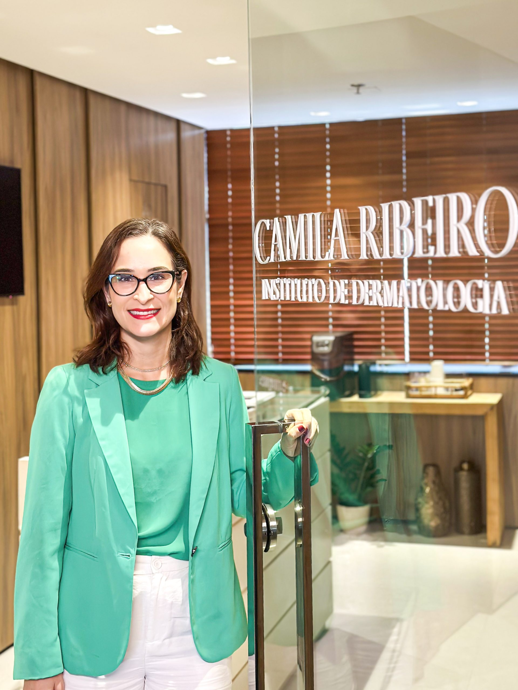
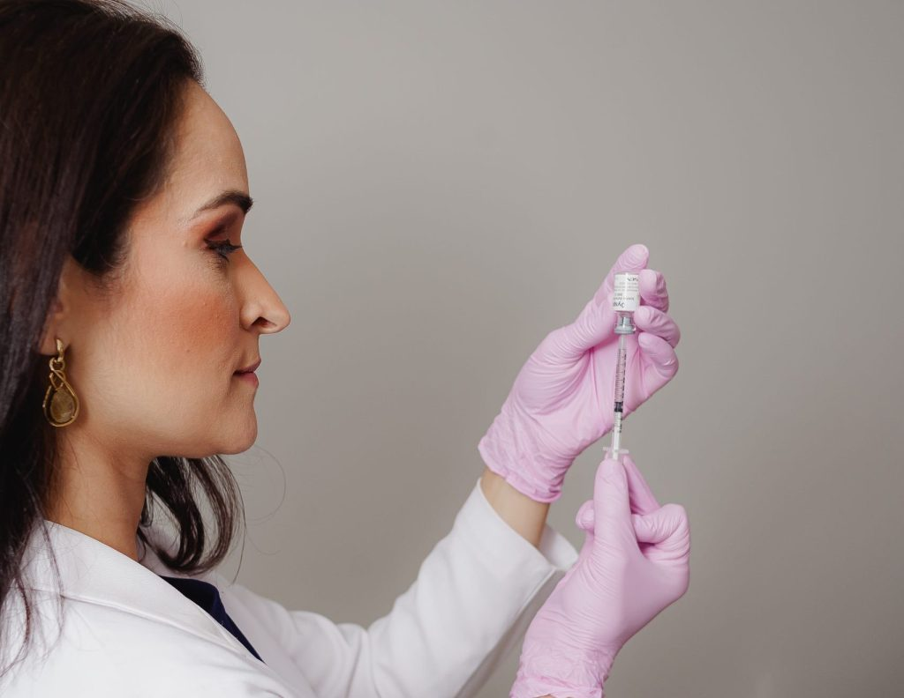

Dermatologia clínica, cirúrgica, estética e saúde capilar — cada paciente único, cada tratamento definido depois de entender você.


Cada paciente é único. Ao longo de anos de experiência e da vivência prática adquirida no cuidado de milhares de pacientes, entendemos que nenhuma pele, rotina ou expectativa é igual à outra.
A consulta começa através da escuta, entendendo as necessidades da sua pele e, somente depois, definindo o tratamento que realmente é ideal para o seu caso.
Promover saúde, prevenir doenças e proporcionar resultados naturais através de uma dermatologia moderna, ética e baseada em evidências científicas.
Diagnóstico, prevenção e tratamento de doenças da pele, cabelos e unhas com acompanhamento personalizado.
Procedimentos cirúrgicos realizados com segurança para remoção de lesões, biópsias e pequenas cirurgias dermatológicas.
Procedimentos modernos que promovem rejuvenescimento, equilíbrio facial e resultados naturais.
Avaliação e tratamento da queda de cabelo, alopecias e doenças do couro cabeludo.
Protocolos personalizados para acne, cicatrizes, manchas e renovação da pele.
Tecnologia avançada para tratamento de manchas, cicatrizes, rugas e rejuvenescimento.
A consulta começa entendendo as necessidades da sua pele e a sua rotina.
Exame clínico cuidadoso e, quando necessário, exames complementares.
Tratamento definido para o seu caso — sem exageros, com evidência.
Edf. Louis Pasteur · Complexo Odonto-Médico Itaigara
Av. Antônio Carlos Magalhães, 585 · Sala 1107
Itaigara · Salvador · BA · 41825-000
Estacionamento pago disponível no complexo.
Entre em contato para agendar sua consulta, esclarecer dúvidas e conhecer nossos tratamentos.
Chamar no WhatsApp · (71) 99985-8585